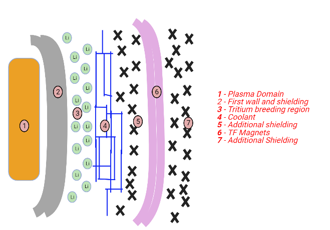
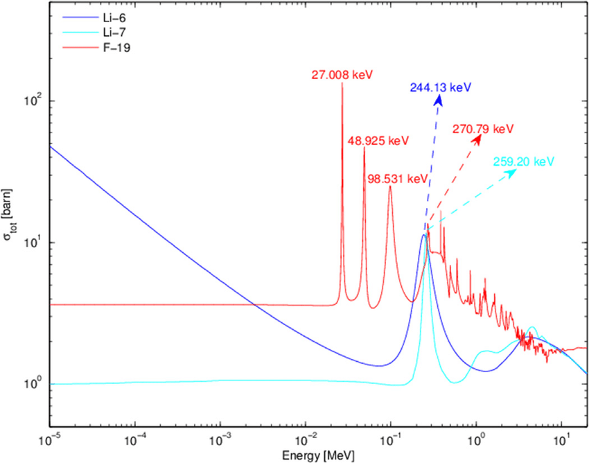

The reactor blanket redefines what it means to multitask. With a fair degree of confidence, I can say that it would be quite a task to find a component in any machine that must play as many vital roles as the reactor blanket must, more so if the constraints that it is subjected to are accounted for.
It is comprised of the immediate surrounding structures of the plasma
domain (the region in which the fusing plasma is confined) and must serve four key
functions:
Figure 1: A depiction of the reactor blanket structure
Protect the magnets (which are just a few metres away from the plasma domain), as well as other surrounding structures and human personnel from electromagnetic radiation and high-energy neutrons.
Tritium breeding. A fusion power plant will need to breed its own tritium due to the scarce stores we have here on Earth (Annual production is 20kg. A 500 MW fusion power plant will require ~ 50kg 1). Such a process could potentially take place in the blanket, with ITER set to trial this in the later years of its operation.
Recover energy from the emitted radiation and fusion products to eventually be converted to electrical energy.
Maintain an impurity-free plasma domain. The first wall of the reactor blanket (as well as the divertor) are the structures that face direct contact with the plasma, and so must be engineered to minimise high Z-number atoms entering the plasma domain, whilst being fashioned from a material that can withstand an extremely high heat flux.
ITER will line the inside of the vessel containing the tokamak with 1 x 1.5-metre blanket modules that aim to accomplish all four tasks.
It will be seen in the coming pages that the reactor blanket and Vacuum Vessel share the roles of shielding and
energy extraction so to keep things fairly concise, we will only quickly mention how the blanket is adapted to such shielding and energy extraction and
defer a more comprehensive discussion of how a tokamak carries out both functions to the vacuum vessel page. With that being said, we begin with a consideration of the
first wall; being the other plasma facing component (PFC) along with the divertor it must be engineered to withstand
conditions similar to those underneath a rocket during take-off!
Tritium Breeding
DT reaction: First-generation fusion reactors will aim to deliver a net energy gain via the deuterium-tritium reaction. Whilst the fusion
elements with an atomic number less than that of iron is theoretically viable for energy generation, the greatest gains are
to be made fusing isotopes of low Z number. Furthermore, the ease at which two isotopes fuse (measured by a quantity known
as the sigma V parameter), is greatest for that of deuterium and tritium, providing further incentives to pursue the reaction.
To show this explicitly, in order to achieve a similar power output of a DT reactor operating at 108 Kelvin, a DH
(deuterium-helium 3) machine would need to sustain temperatures of 2 orders of magnitude greater. Hence, it should be clear
why (most) efforts are focusing on the DT combination.
The good news is that it would be awfully hard to run out of deuterium. In fact, if we were to be running short, there would be
bigger problems to worry about than the operation of a fusion reactor, given that it makes up about 0.01% of the mass
of all water on earth. This may not sound significant, but our planet is not known for its water scarcity and harbours
1018 kilograms of H20. Deuterium is a stable isotope of hydrogen too, so apart from some preprocessing prior to insertion into the reactor, deuterium causes
very few problems to those developing fusion reactors. The same however cannot be said for tritium... Tritium: The heaviest known naturally occurring isotope of hydrogen is one that mainly features in our society
today as a way to create luminescent lights, but will hopefully provide our planet with energy in abundance in the near future.
Before that, however, there are some challenges to overcome which result from the permeability and radioactivity of tritium. A few key bits of information first: tritium as we said is not naturally stable
and has a decay constant of 1.8x10-9 seconds, which translates to a half-life of approximately 12 years. Triton (the name given to the nucleus of tritium)
is a beta emitter, so the products of the decay are an electron (with an average energy of 5 eV) and a helium 3 nucleus. The
relatively short half-life of tritium ensures that stores on earth remain at around 20 kilograms, found mainly in the oceans
and produced in the atmosphere via interactions of nitrogen molecules with cosmic radiation. Figure 2: Total cross section of Li-6, Li-7 and F-19 as a function of neutron energy Breeding: So how will the kilogram quantities required for the continuous operation of a DT reactor be produced?
It turns out that we already breed tritium in some fission-based power plants, occuring when a neutron is captured by the
heavy water that serves to cool the reactor and moderate the energetic neutrons produced. In most designs for fusion power
plants however, the method of choice is that of the interaction of a neutron with lithium; the reactions of interest are
presented below, as well as the total reaction cross sections as a function of incident neutron energy (Technically we are interested in
the capture cross section but both graphs display similar features, albeit with slightly different values on the y axis, and finding a graph with capture cross section was hard.):
n + 6Li → α + t
n + 7Li → n + α + t
The position of the breeding layer in the blanket is sensibly chosen to be directly behind the first wall in order to maximise
tritium output. Referring to Figure 2, we see that the total cross section has a global maximum for the lowest allowed neutron
energy but a local maximum at ~0.244 MeV (due to neutron/nucleus resonance), hence the first wall aims to reduce neutron energy
to roughly this value. Embedding the breeding layer further back may slow the neutrons down to energies in the range of
10-3 to 10-1 MeV, which as can be seen in the graph above is not optimal for tritium production. Finally,
the bred tritium will need to be extracted from the blanket via an active transport process, and then fed back into the reactor, either as
a gas or in pellet form.
Issues and Solutions:
One way to appreciate the difficulty in containing tritium, and other hydrogen isotopes for that matter, is to liken
it to trying to keep sand out of shoes on a trip to the beach. It gets everywhere. The story is no different in a fusion
reactor (with regards to tritium, not sand) and a key challenge to be overcome in the coming years of fusion research is
to minimise the loss of tritium through reactor components via various transport processes.
As with practically all radioactive substances, the release of tritium into the external environment is not desirable.
Tritium easily reacts with oxygen to form tritiated water, which can contaminate local groundwater sources; this can
then go on to lead to adverse health effects in the surrounding populations due to the high activity and the moderately
ionising beta particle that are products of the decay. Furthermore, the permeation of tritium into surrounding structures can significantly
affect its microscopic structure, burdening it with properties that simply are not suitable for the conditions inside that of a fusion reactor.
There are some key parameters unique to each structural material that are used to determine the rate at which
tritium will be transported through it, such as diffusivity (the tendency for tritium atoms to move through the material),
solubility (the tendency for tritium to exist as a diatomic molecule as supposed to a singular atom in the material),
trapping coefficient(the tendency for tritium to bond to various features of the microstructure of the metal such as
vacancies/voids) and many others which I will not name but can
be found in a very detailed overview of the topic
here. The
search for/development of a material with desirable values for the parameters above (and the others not mentioned) is a
very active area of research and to date no 'super material' has been found that satisfies all required properties.
Current materials under consideration are carbon, tungsten or beryllium for plasma facing components, austenitic and ferritic steels, alloys of zirconium,aluminium and
vanadium as well as various ceramics for structural layers surrounding the reactor and metal oxides, nitrides and
carbides for the barrier, which is a thin layer of material with very low propensity for tritium transport, solely designed to
prevent tritium losses.
Figure 2: It's Britney bitch
All materials above have some desirable properties with regards to the issues mentioned above, but unfortunately compromise
elsewhere; for example, the oxides, nitrides and carbides provide low tritium diffusivity but buckle under intense
neutron/thermal exposure, whereas for some metals the story is reversed. The relentless pursuit of materials that
perform adequately under such conditions is a challenging but exciting one, and will certainly lead to revolutionary
advancements in a wide range of fields, not just nuclear engineering!
Neutron Multiplication: In the final part of this section, we'll quickly take a look at one more
feature that the blanket will require if it is to breed tritium. Referring to the tritium breeding reactions above,
we note that capture of a neutron by 7Li yields another neutron, whereas 6Li reactions do not.
The number of neutrons that a reaction produces is termed the neutron multiplication ratio (let this be
denoted χn; χn = 1 for 7Li reaction, 0 for the 6Li reaction), and to maintain a constant power output we need this multiplication ratio in the blanket
to be greater than one. Why is this the case? Our aim is to achieve a fixed number of fusion reactions per second, say K
reactions per second are needed for the power output required. These K fusions produce K neutrons from K tritons
(and deuterons), but due to the fact that not all these neutrons will be captured in the tritium breeding layer
(some will be absorped by surrounding materials, others will undergo collisions instead etc), on passing through
the breeding layer we obtain Kx tritium atoms, with x being the fraction of neutrons that undergo a capture reaction
with a lithium atom (x < 1), so Kx < K. Upon re-insertion to the plasma domain, these will allow for Kx fusions at most.
Hence, we must multiply the number of neutrons that are emitted from the plasma, or else over numerous fusion/breeding
cycles, the number of tritons being reinserted to the reactor will fall exponentially; conventional methods to achieve
such a task are through the insertion of another element with χn > 1 . For high energy neutrons
(E>1.9MeV 3) the following reaction has χn > 2:
n + 9Be → 2 42He + 2n
The capture of a neutron by beryllium ensures that there is no tritium drain (given x > 0.5), and indeed ITER will use first walls fashioned
from beryllium partly to test the validity of this process. Other elements under consideration are lead (χn = 2), but it is less
desirable than Beryllium as a neutron multiplier due to a higher propensity to absorb neutrons completely, which would only contribute to neutron losses.